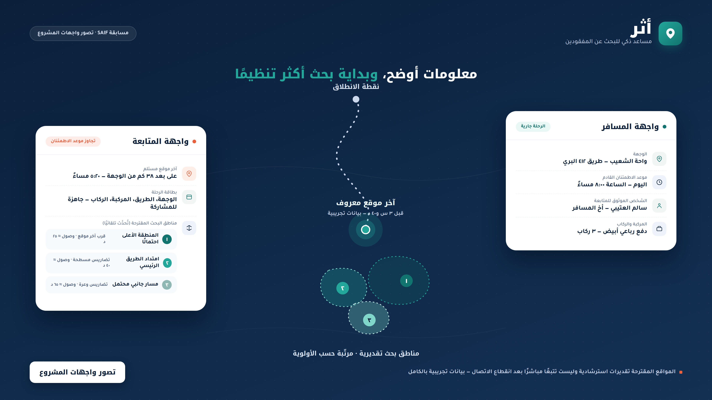

عند تأخر مسافر في رحلة برية عن موعده المتوقع، غالبًا لا تتوفر لدى من يتابعه معلومات كافية ومنظّمة عن وجهته ومساره وموعد اطمئنانه، مما يؤخر بدء أي تحرك ويُبعثر الجهد في البحث دون أولويات واضحة.
تجهيز معلومات المسافر وخطة رحلته بشكل منظّم وقابل للمشاركة قبل حدوث أي طارئ، ثم استخدام الذكاء الاصطناعي عند الحاجة لاقتراح مناطق بحث محتملة وترتيبها حسب الأولوية، لتقليل الوقت الضائع في بداية الاستجابة.

استخدام خطة المسافر ومعلوماته المسجَّلة مسبقًا (الوجهة، المسار، آخر موقع، الوقت المنقضي، الطرق والتضاريس) لتجهيز بطاقة بحث جاهزة فورًا، وترتيب الاحتمالات بدل البدء من الصفر عند كل بلاغ.
لم تُجرَ اختبارات فعلية بعد. خطة التحقق المقترحة: